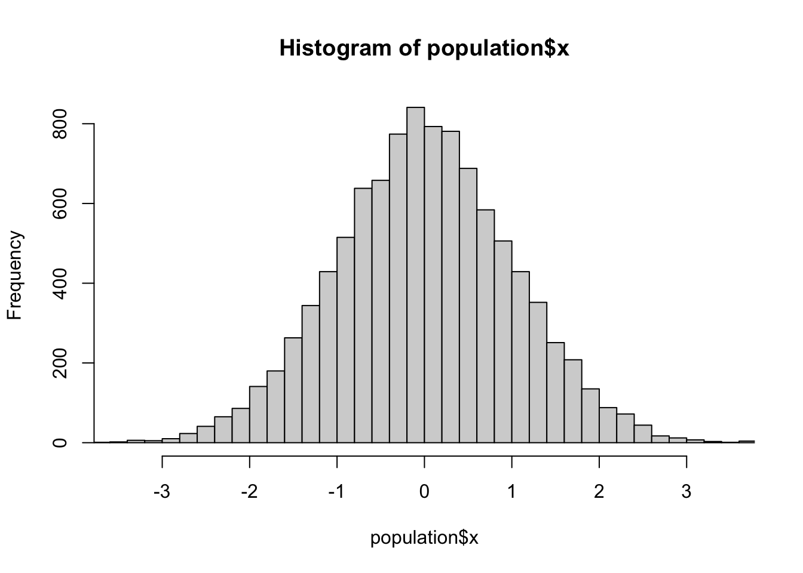
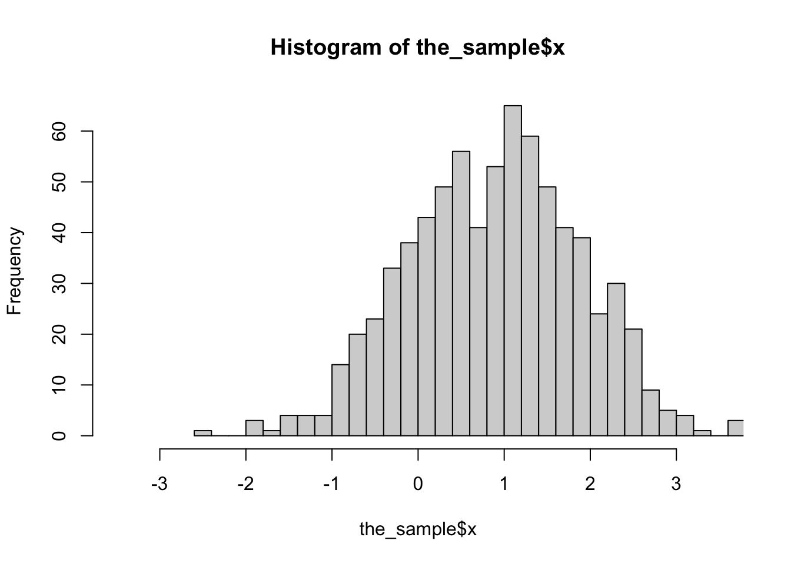
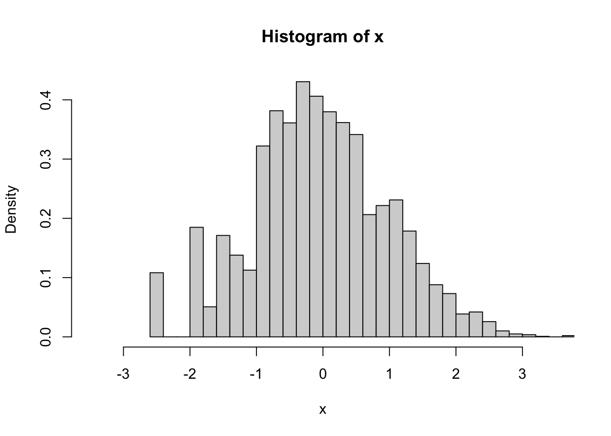
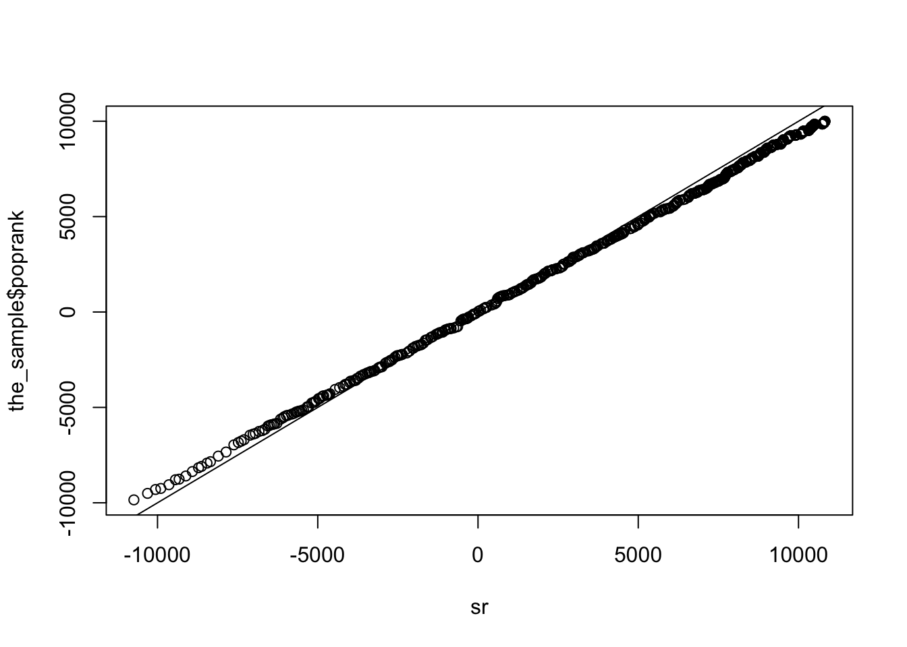
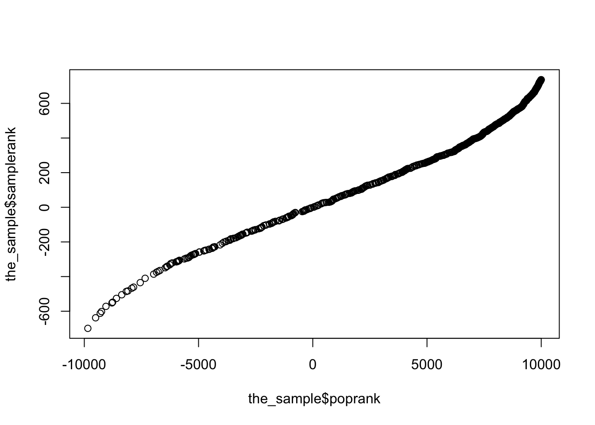

Someone asked on CrossValidated about signed rank tests for complex sample data. They had defined a signed rank function
signrank<-function(x) rank(abs(x))*sign(x)It’s then easy to use svymean to estimate the mean signed rank and its standard error. If we write \(f\) for the transformation from the variable to the signed rank, then this gives a valid point estimate of the population mean of \(f(X)\) and its standard error. You can then get a (approximately) valid test for the null hypothesis that the mean of \(f(X)\) is zero.
The problem is that \(f\) is not the signed-rank transformation in the population, only in the sample, so you aren’t testing the same null hypothesis that you would be testing in the population or in a simple random sample from the population. The transformation \(f\) depends on the sampling design, not just on the population data. If the Hodges-Lehman estimator of the differences is zero in the population but you oversample observations with negative values of the difference, \(x\), then \(f(x)\) will be larger for negative \(x\) than if you had a simple random sample.
We don’t have this problem for the sign test or the \(t\)-test or for estimating geometric means because the transformations in those situations don’t depend on the sampling design. The sign test for paired observations is based on \(\Delta_i = 2(X_i>Y_i)-1\), and this transformation doesn’t depend on the design. A comparison of geometric means is based on the log transformation, and this transformation oesn’t depend on the design. A standard rank transformation does depend on the design.
One way to get a rank transformation that doesn’t depend on the sampling design is to use the population CDF to define the ranks. Under simple random sampling for a continuous variable, the ranks (divided by \(N\)) are just the values of the CDF. So, a good way to define ranks under unequal-probability sampling is using the estimated population CDF. For continuous variables, you could do
ii <- order(x)
r[ii]<- cumsum(w[ii])/sum(w[ii])In general, you need some way to handle ties, and while you’re handling ties you might think about how you want to handle the weight for the current observation – this is like the issue of whether you want the left median or the right median or something in between. So, svyranktest for two-sample tests uses
ii <- order(x)
r[ii] <- ave(cumsum(w[ii])-w[ii]/2, factor(y[ii]))which allocates half the weight of the current observation to the current rank, and averages over ties.
Let’s look at an example, to see if it matters. First, set up the data, where x is symmetric about 0.
library(survey)## Loading required package: grid## Loading required package: Matrix## Loading required package: survival##
## Attaching package: 'survey'## The following object is masked from 'package:graphics':
##
## dotchart population<-data.frame(x=rnorm(10000))
population$p<-with(population, exp(x-3)/(1+exp(x-3)))
population$poprank<-with(population, rank(abs(x))*sign(x))
population$in_sample<-rbinom(10000,1,population$p)==1
the_sample<-subset(population, in_sample)
d<-svydesign(id=~1, prob=~p, data=the_sample)The sample is biased: here’s a histogram of x in the population, in the sample without using weights, and in the sample using weights
hist(population$x,breaks=30,xlim=c(-3.5,3.5))
hist(the_sample$x,breaks=30,xlim=c(-3.5,3.5))
svyhist(~x, d,breaks=30,xlim=c(-3.5,3.5))
In the population, the mean rank is zero
t.test(population$poprank)##
## One Sample t-test
##
## data: population$poprank
## t = -0.0041148, df = 9999, p-value = 0.9967
## alternative hypothesis: true mean is not equal to 0
## 95 percent confidence interval:
## -113.4240 112.9488
## sample estimates:
## mean of x
## -0.2376In the sample, it isn’t
t.test(the_sample$poprank)##
## One Sample t-test
##
## data: the_sample$poprank
## t = 25.532, df = 736, p-value < 2.2e-16
## alternative hypothesis: true mean is not equal to 0
## 95 percent confidence interval:
## 4304.320 5021.395
## sample estimates:
## mean of x
## 4662.858If we construct ranks just from the sample, and do an unweighted analysis, it’s very wrong
the_sample$samplerank<-with(the_sample, rank(abs(x))*sign(x))
t.test(the_sample$samplerank)##
## One Sample t-test
##
## data: the_sample$samplerank
## t = 25.262, df = 736, p-value < 2.2e-16
## alternative hypothesis: true mean is not equal to 0
## 95 percent confidence interval:
## 267.7099 312.8247
## sample estimates:
## mean of x
## 290.2673We can do a weighted analysis
d<-svydesign(id=~1, prob=~p, data=the_sample)
svymean(~poprank, d)## mean SE
## poprank -312.45 398.92As expected the estimated population mean of the population signed rank is roughly zero.
svymean(~samplerank, d)## mean SE
## samplerank -17.951 25.514Somewhat disappointingly, the same is true for the estimated population mean of the sample signed rank
We can define estimated population ranks
ii<-order(abs(the_sample$x))
rr<-numeric(length(ii))
rr[ii]<-cumsum(weights(d)[ii])
sr<-rr*sign(the_sample$x)These match the distribution of the population signed rank
qqplot(sr, the_sample$poprank); abline(0,1)
and the sample rank doesn’t really match the population rank
qqplot(the_sample$poprank,the_sample$samplerank)
And the ranks defined using weights have approximately zero mean, as they should
svymean(sr,d)## mean SE
## [1,] -350.99 430.2The only disappointing thing here is that defining the rank transformation without considering the weights actually does pretty well. While in principle I think you really do want to define the ranks so the test estimates a well-defined population parameter, it doesn’t actually seem to matter all that much (in this and some other examples).
The one-sample Wilcoxon test has a big advantage of the two-sample test in that it really is based on a one-sample location parameter, and one that’s fairly strongly correlated with the mean. There’s not as much room for things to go wrong as there is with two-sample tests.